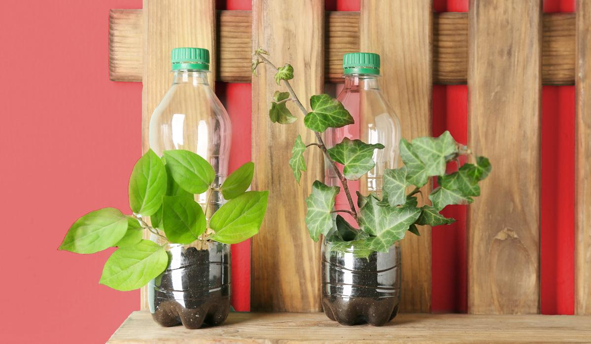

Reutilización de productos

La reutilización ocupa el segundo puesto en la jerarquía de residuos, después de la prevención y por encima del reciclaje ya que es importante porque hace que la primera vida útil sea más larga, evitando la necesidad de reciclar y ahorrando energía, materiales y dinero en el proceso
Reducir, reutilizar y reciclar
Cada una de estas tres palabras tiene un significado específico y el orden o jerarquía en las que se mencionan es de suma importancia, ya que se debe iniciar por reducir o minimizar los residuos.
La primera R corresponde a la palabra REDUCIR. Debemos evitar producir tantos residuos. Si reducimos disminuimos el impacto sobre el medio ambiente.
Reducir
Algunas de las recomendaciones generales que se dan con el fin de REDUCIR la generación de residuos son las siguientes:
1) En la medida de lo posible comprar artículos al por mayor o en presentaciones o cantidades grandes con el fin de evitar un excesivo numero de envases, bolsas y embalajes.
2) Tratar de comprar los artículos que menos embalajes tengan. Evitar el consumo de los productos en envases desechables. Procurar el consumo de productos en envases retornables.
3) Evitar los productos individuales y huir de los artículos de usar y tirar (platos, cubiertos, servilletas…)
Reciclar
La tercera “R” es RECICLAR y es posiblemente la más conocida de todas, es una traducción del inglés RECYCLE que es conocida internacionalmente como el símbolo de las flechas en muchos envases, productos y programas educativos.
Esta es una de las erres más populares debido a que el sistema de consumo actual ha preferido usar envases de materiales reciclables (plásticos y bricks, sobre todo), pero no biodegradables.
Sin embargo, hay todavía un desconocimiento general ya que se confunde con el proceso industrial de los materiales y se usa indistintamente con el significado de reutilizar.
Aunque es la erre más común es la menos eficaz. Se trata de rescatar lo posible de un material que ya no sirve para nada (comúnmente llamado basura) y convertirlo en un producto nuevo.
Por ejemplo, una caja vieja de cartón se puede triturar y a través de un proceso industrial o casero convierte a papel nuevo. Lo bueno del reciclaje es que actualmente casi todo tipo de basura se puede reciclar y muchos municipios ya lo tienen integrado a su sistema de recolección de basura.
Esta palabra también se usa para indicar la acción de separar los materiales según sus características físicas.
Así se hacen programas de reciclaje, lo cual significa que la persona va a «separar» de alguna manera sus residuos «reciclables» de la basura que no sirve. Se calcula que con esta acción se reduce el volumen de basura de la población en un 40% aproximadamente (este porcentaje se refiere a los cuatro materiales más comunes que se pueden reciclar o reutilizar: papel, vidrio, plásticos y aluminio).
Reciclar significa volver a usar algunos de los residuos generados como materias primas en procesos industriales con el fin de convertirlos nuevamente en productos nuevos de calidad para el consumidor.
Es importante conocer que muchos residuos considerados como «basura» pueden ser materias primas importantes para muchas industrias.
Reutilizar
La segunda “R” es por REUTILIZAR. Esto significa que debemos reusar o «volver a usar» algunas cosas que consideramos inútiles o inservibles.
Todo aquello que no podamos evitar utilizar debe ser utilizado tantas veces como nos sea posible, alargando así su vida útil y evitando al mismo tiempo generar nuevos residuos.
Nuevamente las posibilidades son infinitas. Todos los materiales o bienes pueden tener más de una vida útil, bien sea reparándolos para un mismo uso o con imaginación para un uso diferente. Aquí te describimos un ejemplo de programa de donación de ordenadores para ONG.
Algunos consejos que puedes tener en cuenta son los siguientes:
1) Utilizar envases retornables de vidrio. Estos envases son reutilizables muchas veces al ser lavados y desinfectados en perfecto estado. En realidad la reutilización es para «alargar», por así decirlo, la vida de muchos productos que generan residuos.
2) Pensar dos veces antes de tirar a la basura algún objeto o desecho que ya no nos sirve. Las botellas desechables se pueden convertir en ladrillos ecológicos, si en su interior se les ponen todas las bolsas de plástico que ya no se usan.
3) Hacer una lista de todos los productos que consumimos en el hogar u oficina y sus respectivos embalajes es: analizar las posibilidades de regalar o venderlos después de ser usados.
4) Hacer una valoración e inventario de lo que se consume mensualmente en nuestra empresa con el fin de evaluar las posibilidades de reutilización. Ejemplo: Utilizar la otra cara de las hojas impresas.
5) Reutilizar también incluye la compra de productos de segunda mano, ya que esto alarga la vida útil del producto y a la vez implica una reducción de consumo de productos nuevos, porque en vez de comprar algo nuevo lo compras de segunda mano.
Otros artículos que te podrían interesar:

Cada vez son más las ciudades que apuestan por propuestas ambientales que mejoren ya no solo el día a día de la ciudad si no que piensen en un futuro conjunto para el planeta. En esos casos entra el uso de la bicicleta. Seguir Leyendo...

Las energías renovables son fuentes de energía basadas en el aprovechamiento de los recursos naturales: sol, viento, agua o biomasa vegetal o animal. Se caracterizan por no utilizar combustibles fósiles, sino recursos naturales que pueden renovarse indefinidamente. Seguir Leyendo...